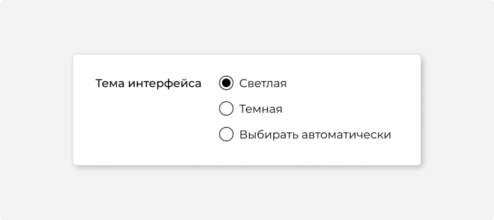
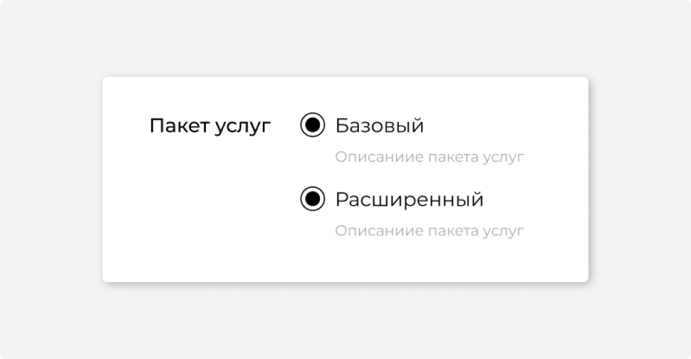
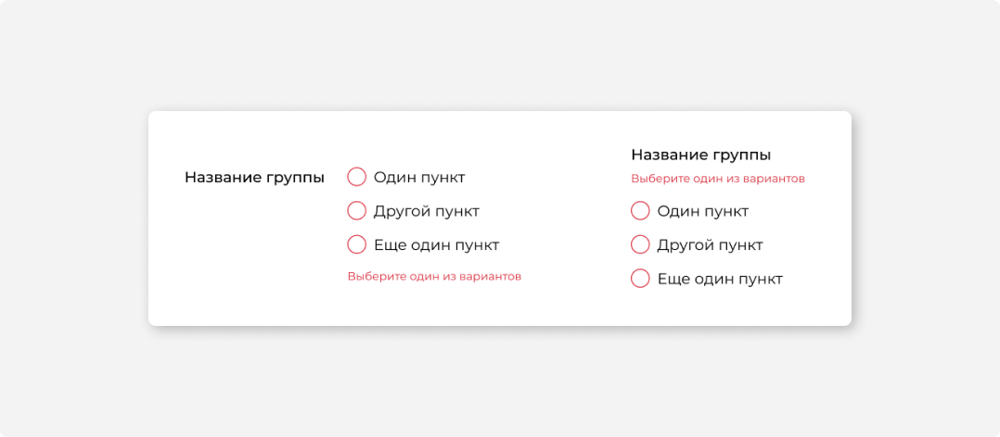
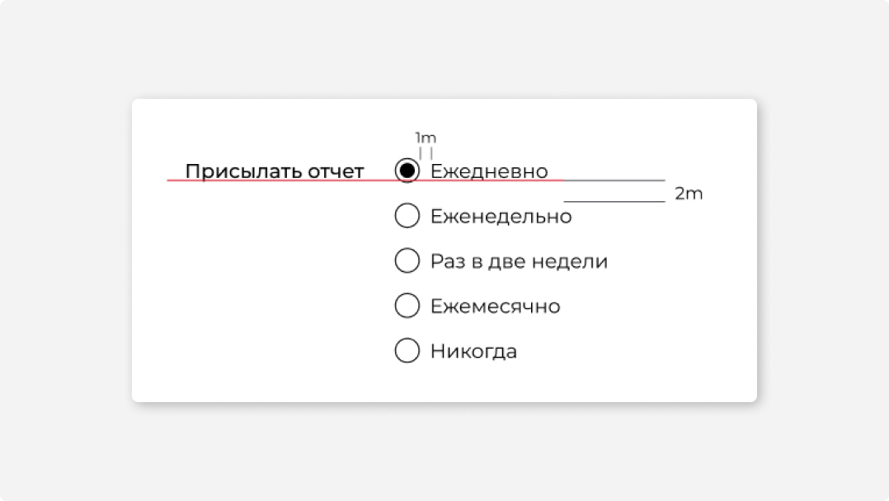

Тема интерфейса
#1
Назначение
Группа радиокнопок используется для выбора одного значения из нескольких. Ее используют, когда вариантов выбора немного — 2–5. Если названия вариантов короткие, вместо группы радиокнопок можно использовать переключатель, так форма будет выглядеть компактнее. Если значений больше 5, используйте раскрывающийся список или комбобокс.
#2
Описание работы
Клик по названию или по самой радиокнопке приводит к ее выбору. Повторное нажатие не снимает выбор.
В группе радиокнопок только один пункт может быть выбран. Группа радиокнопок не может состоять из 1 пункта.
Если группа радиокнопок используется для настройки параметров и показывает текущее состояние системы, одна из радиокнопок всегда выбрана. Так видно, в каком состоянии система находится по умолчанию. При желании пользователь может вернуть настройку в исходное состояние.
Если группа радиокнопок нужна для сообщения каких-то сведений, то по умолчанию может быть не выбран ни один из пунктов.
Варианты, которые нельзя выбрать в списке радиокнопок, должны быть заблокированы. Валидация может быть только в том случае, если обязательно выбрать хотя бы один вариант.
Если пользователю может быть не очевидно, что произойдет при выборе, объясните это дополнительным текстом или картинкой.
Если заголовок группы находится слева, текст валидации располагайте под группой радиокнопок.
#3
Размеры и расположение
Радиокнопки располагают в строку, только если их 2 штуки. Если больше — только в столбец. Не располагайте радиокнопки из одной группы в несколько столбцов. Группы радиокнопок смешиваются, и непонятно, к какой группе относится конкретная радиокнопка.
Название группы выравнивайте по базовой линии первого пункта:
#4
Состояния